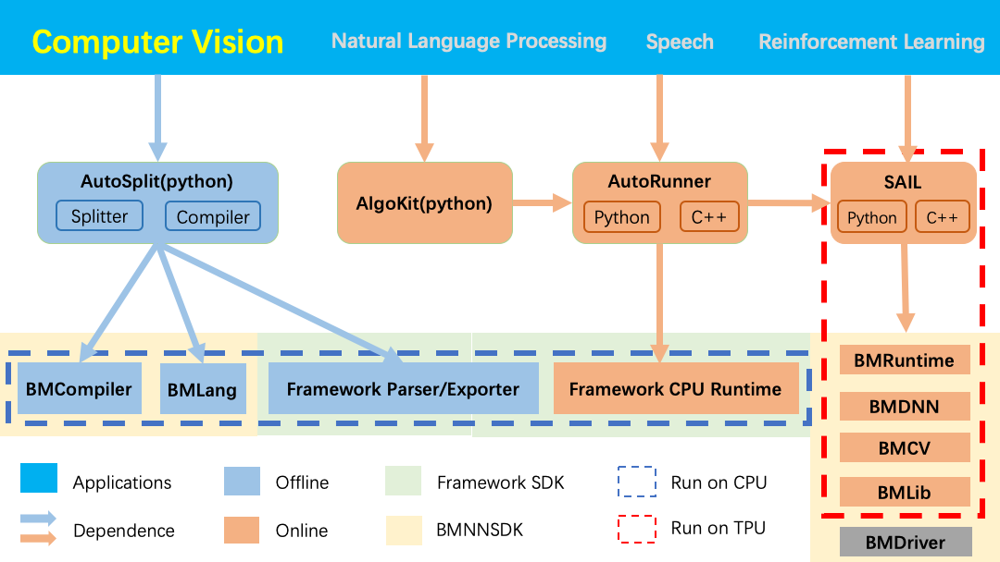

Introduction of Sophon Inference¶
Sophon Inference is an open source tool developed based on Bitmain’s original deep learning development kit “BMNNSDK”. It is designed to help you quickly deploy your model on the Sophon TPUs.(https://sophon.ai)
The figure above shows the overall structure of Sophon Inference and its dependencies on BMNNSDK. Below we explain the concepts mentioned in the above graphic.
BMNNSDK¶
BMNNSDK is the original deep learning development toolkit of Bitmain. It is mainly composed of modules such as BMDriver, BMCompiler, BMRuntime, BMDNN, BMCV and BMLib.
BMDriver :It is the driver for the Sophon TPU and is installed into your operating system kernel in an “insmod” manner.
BMCompiler :It is a set of model compilation tools that compile your trained deep learning models into instructions that can be loaded and executed by the Sophon TPU. These instructions will be stored into to a file with the suffix “bmodel”.
BMRuntime :It provides interfaces to load the “bmodel” file onto the Sophon TPU and drive the TPU chip to implement reasoning.
BMDNN :It provides layer/operator computation through TPU.
BMCV :It can drive the TPU for image processing.
BMLib :Provides basic interfaces, which can control TPU memory.
If you have any other questions about BMNNSDK, please refer to the “NNToolChain User Manual” and the “BMCV User Manual”.
Model deployment¶
Model deployment includes two steps: model offline compilation and online reasoning.
a).Offline Compilation
Use the BMCompiler to compile the deep learning model into TPU instructions and save them into the bmodel file.
BMCompiler is a set of model compilation tools that correspond to different deep learning frameworks. The current BMNNSDK implements four compilation tools to support four deep learning frameworks. They are bmnetc(for Caffe), bmnett(for Tensorflow), bmnetp(for Pytorch), bmnetm(for Mxnet)。
Model compilation does not require sophon TPU, and does not depend on modules other than BMCompiler in BMNNSDK.
b).Online Reasoning
Load the “bmodel” file into the TPU using the interfaces provided in BMRuntime, and drive the TPU to execute the instructions in the bmodel to complete the reasoning.
To implement the online reasoning process, you need to install at least Sophon TPU, BMDriver, BMruntime.
Sophon Inference¶
Sophon Inference includes AutoSplit, Algokit, AutoRunner, SAIL. We provide python/c++ interfaces and sample programs, you can choose the appropriate calling method according to your needs.
For users using Python, Sophon Inference provides three modules: SAIL, AutoDeploy, and Algokit.
SAIL :BMRuntime, BMCV, BMDNN and BMLib in BMNNSDK are encapsulated. C++/python interfaces are provided. And can be used to a).Drive the TPU to reason the compiled deep learning model (bmodel); b).Use Sophon TPU for image and video processing. For detailed introduction of model conversion and image/video processing, please refer to “NNToolChain User Documentation” and “BMCV User Documentation”.
AutoSplit :One-click model splitting and compilation tool for models that cannot be fully deployed to the Sophon TPU, Python interfaces are provided, can automatically a).Divide the original model into several sub-models; b).Compile the submodels that can be deployed on the Sophon TPU; Current support models trained by tensorflow and mxnet.
AutoRunner :Usually used with AutoSplit, it can also be used alone. C++/Python interfaces are provided. The provided interface can implement the reasoning of the sub-model sequence after splitting or compilation. The inference interface of the specific deep learning framework and SAIL are called in AutoRunner to implement the reasoning on the CPU and TPU respectively. Currently supports tensorflow/mxnet.
Algokit :A python algorithm framework , which encapsulated the functions of SAIL and AutoRunner, for application deployment. includes: a). Template codes for user reference; b). Usages for users to add algorithm applications. Currently, application examples in the field of computer vision such as image classification, detection, and segmentation are provided.